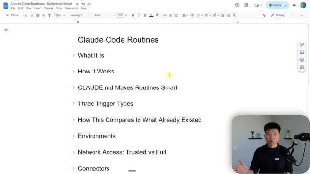

🎬 Comment créer des agents Claude 24h/24 et 7j/7. Facile.
📌 Synthèse Exécutive & Outils
La vidéo de la chaîne *Nate Herk | AI Automation* explore l'une des évolutions les plus majeures de l'écosystème de développement autonome : l'introduction par Anthropic des « routines » dans Claude Code, annoncée le 14 avril. Cette fonctionnalité révolutionnaire permet d'exécuter des prompts et des agents IA 24h/24 et 7j/7 directement sur l'infrastructure cloud d'Anthropic, affranchissant ainsi les développeurs de la contrainte d'laisser leur ordinateur portable allumé. Ces routines peuvent être déclenchées par un calendrier (planifiées), un appel API ou un événement webhook (comme des actions GitHub), offrant une flexibilité inédite pour l'automatisation des flux de travail techniques.
À travers une démarche d'ingénierie empirique, l'auteur détaille sa migration d'automatisations locales vers des tâches distantes basées sur le web. Il partage les obstacles rencontrés et résolus lors de ses tests pratiques : la gestion des secrets d'API absents du dépôt GitHub public, l'ajustement des niveaux de sécurité réseau de l'environnement cloud (passage du mode « de confiance » au mode « complet »), et l'adaptation de prompts aux contextes sans état (*stateless*). L'analyste démontre ainsi comment connecter Claude Code à des services tiers (comme ClickUp ou l'API YouTube) de manière totalement autonome et sécurisée.
Enfin, la vidéo met en lumière les limites inhérentes à l'architecture cloud d'Anthropic, notamment l'impossibilité d'accéder à des sessions locales persistantes ou à des données authentifiées par des cookies locaux (comme pour l'automatisation de navigateurs via Playwright). L'intervenant conclut sur la méthodologie exacte à adopter pour concevoir des instructions uniques et infaillibles, garantissant que les agents autonomes exécutent leurs tâches complexes du premier coup sans nécessiter d'intervention humaine.
### 🛠️ Outils, Modèles & Logiciels Présentés
* **Claude Code** : L'environnement de développement et d'agent conversationnel d'Anthropic intégrant désormais des routines cloud pour exécuter des tâches automatisées à distance.
* **Anthropic Cloud Infrastructure** : L'infrastructure web managée sur laquelle s'exécutent les routines de manière isolée et planifiée 24h/24 et 7j/7.
* **GitHub** : Le système de contrôle de version utilisé pour synchroniser et cloner les dépôts de code (ex. le projet *Herc2*) nécessaires à l'exécution contextuelle des routines distantes.
* **ClickUp** : L'outil de gestion de projet et de communication utilisé dans les tests pour valider l'envoi automatisé de messages et de rapports via l'agent.
* **YouTube Data API** : L'API externe exploitée pour récupérer et analyser automatiquement les commentaires récents des utilisateurs sous forme de résumés structurés.
* **Playwright CLI** : Un outil d'automatisation de navigateur mentionné pour exécuter des actions web complexes, bien que limité dans un environnement cloud sans état (*stateless*).
### 🔑 Points Clés & Enseignements Stratégiques
* **Affranchissement du matériel local** : Les routines cloud permettent d'exécuter des agents IA 24h/24 et 7j/7 sur les serveurs d'Anthropic, rendant l'utilisation d'un ordinateur portable allumé en continu totalement superflue.
* **Déclencheurs multimodaux** : Les routines ne se limitent pas à des planifications horaires (minimum d'une exécution par heure) ; elles peuvent également être déclenchées par des appels API ou des événements Webhooks GitHub.
* **Architecture sans état (*Stateless*)** : Chaque exécution distante clone temporairement le dépôt GitHub, réalise la tâche, puis détruit l'environnement, ce qui impose de concevoir des scripts autonomes et indépendants d'une session persistante.
* **Gestion sécurisée des variables d'environnement** : Puisque les fichiers `.env` contenant les clés secrètes sont exclus des dépôts GitHub via `.gitignore`, il est impératif de déclarer ces clés directement dans les paramètres de l'environnement cloud d'Anthropic.
* **Niveaux d'accès réseau ajustables** : Pour autoriser l'agent à interagir avec des bibliothèques externes ou des API non vérifiées par défaut, le niveau d'accès de l'environnement cloud doit être basculé du mode « de confiance » au mode « complet ».
* **Explicitation des sources de configuration** : Face à des agents qui peinent parfois à localiser automatiquement les clés d'API dans des structures de projets complexes, l'écriture du prompt doit explicitement leur ordonner d'utiliser les variables d'environnement distantes.
* **Conception de prompts auto-suffisants** : Les routines étant conçues pour un flux d'exécution unique sans intervention humaine, les instructions textuelles doivent être extrêmement précises et structurées pour empêcher l'agent de s'arrêter pour poser des questions.
* **Incompatibilité des sessions locales et des cookies** : Les automatisations basées sur des navigateurs (comme Playwright) nécessitant des sessions locales, des jetons de connexion ou des cookies pré-enregistrés échouent dans le cloud, requérant l'utilisation exclusive d'API ou de clés d'authentification.
* **Gestion des branches et des résultats** : Si une routine modifie activement une base de code ou effectue une revue de code, le système génère automatiquement une nouvelle branche ou restitue un livrable au lieu de supprimer l'ensemble des modifications.
* **Méthodologie de migration itérative** : Il est fortement recommandé de tester d'abord les routines sur des actions simples et sans conséquence (comme l'envoi de messages de test) avant d'y migrer des flux de production complexes.
🛠️ Outils, Modèles & Logiciels Présentés
🔑 Points Clés & Enseignements Stratégiques
- ✦& Enseignements Stratégiques
- ✦Affranchissement du matériel local** : Les routines cloud permettent d'exécuter des agents IA 24h/24 et 7j/7 sur les serveurs d'Anthropic, rendant l'utilisation d'un ordinateur portable allumé en continu totalement superflue.
- ✦Déclencheurs multimodaux** : Les routines ne se limitent pas à des planifications horaires (minimum d'une exécution par heure) ; elles peuvent également être déclenchées par des appels API ou des événements Webhooks GitHub.
- ✦Architecture sans état (*Stateless*)** : Chaque exécution distante clone temporairement le dépôt GitHub, réalise la tâche, puis détruit l'environnement, ce qui impose de concevoir des scripts autonomes et indépendants d'une session persistante.
- ✦Gestion sécurisée des variables d'environnement** : Puisque les fichiers `.env` contenant les clés secrètes sont exclus des dépôts GitHub via `.gitignore`, il est impératif de déclarer ces clés directement dans les paramètres de l'environnement cloud d'Anthropic.
- ✦Niveaux d'accès réseau ajustables** : Pour autoriser l'agent à interagir avec des bibliothèques externes ou des API non vérifiées par défaut, le niveau d'accès de l'environnement cloud doit être basculé du mode « de confiance » au mode « complet ».
- ✦Explicitation des sources de configuration** : Face à des agents qui peinent parfois à localiser automatiquement les clés d'API dans des structures de projets complexes, l'écriture du prompt doit explicitement leur ordonner d'utiliser les variables d'environnement distantes.
- ✦Conception de prompts auto-suffisants** : Les routines étant conçues pour un flux d'exécution unique sans intervention humaine, les instructions textuelles doivent être extrêmement précises et structurées pour empêcher l'agent de s'arrêter pour poser des questions.
- ✦Incompatibilité des sessions locales et des cookies** : Les automatisations basées sur des navigateurs (comme Playwright) nécessitant des sessions locales, des jetons de connexion ou des cookies pré-enregistrés échouent dans le cloud, requérant l'utilisation exclusive d'API ou de clés d'authentification.
- ✦Gestion des branches et des résultats** : Si une routine modifie activement une base de code ou effectue une revue de code, le système génère automatiquement une nouvelle branche ou restitue un livrable au lieu de supprimer l'ensemble des modifications.
- ✦Méthodologie de migration itérative** : Il est fortement recommandé de tester d'abord les routines sur des actions simples et sans conséquence (comme l'envoi de messages de test) avant d'y migrer des flux de production complexes.
⏱️ Chronologie & Transcription Complète Audio & Visuelle (Mot pour Mot)
Cloud Code nous a enfin apporté des routines, ce qui signifie en gros que vous pouvez injecter un prompt dans Cloud Code, mais il peut s'exécuter sur le web, donc votre ordinateur portable n'a pas besoin de rester ouvert. Et je suis tellement enthousiaste à ce sujet. J'ai déjà commencé à l'essayer. J'ai migré mes automatisations là-bas, mais il y a beaucoup de petits pièges, alors je suis là pour vous expliquer exactement comment vous pouvez réellement configurer ces automatisations pour qu'elles fonctionnent. Donc aujourd'hui, le 14 avril, Cloud a tweeté, désormais en version préliminaire de recherche, les routines dans Cloud Code. Vous configurez une routine une seule fois, ce qui ressemble fondamentalement à un prompt, et elle peut s'exécuter selon un calendrier, à partir d'un appel API ou en réponse à un événement, et elle s'exécute sur l'infrastructure web d'Anthropic. Donc c'est génial. Vous pouvez donc appeler une routine à partir d'une API. Vous pouvez
Interface & Outils : Twitter / X (interface web)
Contenu textuel & Code : Publication textuelle de Claude annonçant les routines dans Claude Code ("Now in research preview: routines in Claude Code") avec une capture d'interface illustrant la configuration d'une routine et des déclencheurs (triggers).
Action / Démonstration : Le présentateur commente l'annonce des routines sur l'infrastructure web de Claude Code.
 🔍 Agrandir
🔍 Agrandir
faire en sorte que des événements GitHub le déclenchent, ou ils peuvent être planifiés, ce qui ressemble aux automatisations planifiées que nous avons déjà, mais maintenant ils s'exécutent sur le web. Donc vous pouvez vraiment les créer depuis n'importe où. Vous pouvez le faire ici même comme un déclencheur planifié pour exécuter des agents distants planifiés, ce qui se trouve dans le terminal. Vous pourriez aussi aller sur clawed AI slash code. Donc vous pourriez le faire sur le web. Et juste ici, vous voyez, j'ai trois routines basées sur le web juste ici. Ou ce que je vais vous montrer aujourd'hui, c'est simplement de le faire dans l'application de bureau. Parce que juste ici, si je vais dans mes tâches planifiées, vous pouvez voir que j'en ai quelques-unes comme ces quatre qui sont locales. Et ensuite j'ai ces quatre qui s'exécutent à l'intérieur d'un dépôt GitHub. Donc ce sont les distantes. Si je vais ici en haut et que je clique sur
Interface & Outils : Visual Studio Code, terminal intégré (Claude Code)
Contenu textuel & Code : Commande '/sche' avec autocomplétion affichant les options : /schedule, /claude-api, /pulse-check, /n8n-workflow-patterns, /codex:rescue, /rewind.
Action / Démonstration : Saisie de la commande de planification d'agents distants dans l'interface de Claude Code.
 🔍 Agrandir
🔍 Agrandir
nouvelle tâche, c'est ici que nous pourrions configurer une nouvelle tâche locale ou une nouvelle tâche distante. C'est très similaire. Vous configurez le nom, vous configurez ce que Cloud doit faire, et voici le prompt réel. J'en parlerai donc plus en détail dans un instant, mais ensuite vous configureriez votre modèle, votre dépôt et votre environnement cloud. Vous définissez la cadence, toutes les heures, tous les jours, les jours de semaine. Je crois que le minimum est d'une fois par heure. Genre, vous ne pourriez pas le faire toutes les 10 minutes ou quelque chose comme ça, mais ce n'est quand même pas mal du tout. C'est ici que vous pourriez configurer tous vos connecteurs. Donc, si vous avez besoin de connecter Slack ou Gmail ou, vous savez, peu importe ce que c'est, vous pouvez les connecter juste ici, mais vous pouvez aussi tout simplement utiliser votre API classique.
Interface & Outils : Application web de gestion d'agents IA (Claude Code / Nate Herk Cloud)
Contenu textuel & Code : Formulaire de création de tâche ("New remote task", champ de nom, zone de texte pour le prompt, options de planification : Hourly, Daily, Weekdays, Weekly, Custom, sélection de dépôt GitHub et de modèle Opus 4.6).
Action / Démonstration : Configuration d'une nouvelle tâche planifiée à distance en définissant son nom, son prompt et sa fréquence d'exécution.
 🔍 Agrandir
🔍 Agrandir
points de terminaison avec vos clés API. Et puis bien sûr, vous avez vos permissions. Vous pouvez donc choisir la manière dont Claude doit agir. Maintenant, une chose à propos de ceux-ci, c'est qu'ils sont conçus pour être un prompt unique. Vous n'êtes pas là. Vous voulez donc probablement vous assurer qu'il n'a jamais à s'arrêter et à vous poser des questions. Sinon, quel est l'intérêt de l'automatisation ? Donc, comme je l'ai dit, il y a des tonnes de choses à explorer ici et je ne vais pas essayer de vous ennuyer, mais certaines de ces choses sont vraiment importantes parce que lorsque j'ai fait la configuration pour la première fois, mes automatisations ne se sont pas contentées de migrer et de fonctionner. Je vais donc vous dire les problèmes que j'ai rencontrés et, espérons-le, répondre à tout ce que vous avez besoin de savoir pour n'avoir pas à aller dans les commentaires et poser ces questions courantes
Interface & Outils : Application web d'automatisation et Google Docs
Contenu textuel & Code : Formulaire de configuration de tâche (Name, description, repository, sélection de la fréquence quotidienne à 09:00 AM, section Permissions) et plan de cours sur "Claude Code Routines".
Action / Démonstration : Le présentateur explique la configuration d'une tâche planifiée et des permissions associées, puis présente la feuille de route du sujet.
 🔍 Agrandir
🔍 Agrandir

🔍 Agrandirquestions. Je peux simplement y répondre ici même pour vous. Laissez-moi donc d'abord, très rapidement, vous montrer ce que j'ai testé. La première chose que je voulais tester, c'est si je venais ici et que je créais une nouvelle routine pour simplement envoyer un message à mon ClickUp. Évidemment, cela n'a aucune valeur, mais je voulais juste voir comment cela fonctionnait. Parce que ce que je voulais faire, c'est voir si je pouvais le faire sans ajouter mon connecteur ClickUp.
Interface & Outils : Interface web d'automatisation de tâches / gestion de routines par IA.
Contenu textuel & Code : Liste des tâches planifiées (routines quotidiennes ou personnalisées) telles que 'Skool wins engagement', 'Notification responses', 'AI news roundup', 'Youtube comment replies', 'Testing Skool Wins', 'Testing YT Comments', 'Testing ClickUp API'.
Action / Démonstration : Le présentateur montre l'écran de planification des routines et survole ou sélectionne l'une d'elles, en expliquant ses tests de routines pour l'intégration avec ClickUp.
 🔍 Agrandir
🔍 Agrandir
Et j'ai réussi à le déclencher, mais ça n'a pas fonctionné tout de suite. Laissez-moi donc vous montrer ce sur quoi je suis tombé. La façon dont cela fonctionne, c'est que vous avez besoin d'un dépôt GitHub avec lequel le synchroniser pour que cela puisse réellement s'exécuter. Il va donc cloner mon projet Herc2 ici même sur le Web. Il va pouvoir lire mon fichier cloud.md. Il va pouvoir lire mes scripts et mes compétences. Et puis, une fois qu'il a terminé le travail, il détruit simplement ce petit clone GitHub dans le cloud.
Interface & Outils : Application web d'automatisation / gestion de tâches (style interface SaaS d'agent IA)
Contenu textuel & Code : Nom de la tâche « Testing ClickUp API », état actif (« Active »), dépôt GitHub « nateherkai/Herk-2.0 », instructions pour envoyer un message dans ClickUp, et l'historique des exécutions manuelles (« Runs »).
Action / Démonstration : Affichage des paramètres d'une tâche planifiée connectée à un dépôt GitHub et configuration des instructions d'exécution.
 🔍 Agrandir
🔍 Agrandir
Mais comme vous le savez, vous ne poussez pas vos secrets sur GitHub. Parce que si vous regardez ici, mon projet Herc2, c'est mon fichier .env avec toutes mes clés d'API. Et il est répertorié dans le gitignore, ce qui signifie fondamentalement, hé, lorsque vous poussez vers GitHub, vous n'incluez pas ces fichiers. Donc ce que cela signifie, c'est qu'ici, si cela regarde seulement votre dépôt GitHub, il n'y a pas de .env.
Interface & Outils : Visual Studio Code, terminal intégré avec l'interface CLI de Claude Code.
Contenu textuel & Code : Explorateur de fichiers montrant l'arborescence du projet Herk-2 (dossiers .claude, archives, scripts, .env, .gitignore, etc.) et le terminal affichant la commande `/schedule` avec des options d'autocomplétion.
Action / Démonstration : Le présentateur navigue dans l'explorateur de fichiers de VS Code tandis que Claude Code est ouvert dans le terminal intégré.
 🔍 Agrandir
🔍 Agrandir
Alors, comment obtenez-vous vos clés API dans cette routine qui s'exécute sur le web ? Eh bien, ce que vous faites, c'est qu'à l'intérieur de cette tâche planifiée, vous avez un environnement cloud. Donc si je clique sur celui-ci, vous pouvez voir que celui-ci s'appelle NateHurt Cloud. Donc si j'ouvre les paramètres, qu'est-ce que vous voyez ? Vous avez le nom de cet environnement cloud, vous avez l'accès réseau, et vous avez des variables d'environnement.
Interface & Outils : Interface web d'automatisation et de gestion de tâches planifiées (type agent IA cloud).
Contenu textuel & Code : Paramètres de tâches planifiées : nom du repository GitHub, instructions textuelles pour l'IA, fréquence d'exécution et sélection de l'environnement cloud.
Action / Démonstration : Navigation et configuration des paramètres d'une tâche planifiée avec sélection d'un environnement cloud dédié.
 🔍 Agrandir
🔍 Agrandir
 🔍 Agrandir
🔍 Agrandir
Donc juste ici, c'est là que je mets ma clé API YouTube, ma clé API ClickUp, toutes les autres clés API auxquelles je dois donner accès à cet environnement cloud. Et puis l'autre chose que vous devez faire, c'est de regarder les niveaux d'accès, car juste ici, vous pouvez voir que celui-ci est sur complet, mais par défaut, celui-ci sera sur de confiance, je crois. Et cela signifie que vous pouvez uniquement télécharger des paquets provenant de sources vérifiées d'Anthropic.
Interface & Outils : Interface web de configuration de l'environnement cloud.
Contenu textuel & Code : Nom de l'environnement ("Nate Herk Cloud"), niveau d'accès réseau ("Full"), section des variables d'environnement au format .env (floutée) et script d'installation bash.
Action / Démonstration : Le présentateur explique comment configurer les clés API et les niveaux d'accès dans l'environnement cloud.
 🔍 Agrandir
🔍 Agrandir
Et quand nous en parlerons plus tard, j'aurai un lien où vous pourrez tous les voir. Vous pouvez même en faire un personnalisé si vous vouliez autoriser des domaines spécifiques qui ne sont pas sur cette liste. Mais pour que ClickUp fonctionne dans ce cas, j'ai dû passer en mode complet parce que quand je suis passé en mode de confiance, ça a dit, hé, nous ne pouvons pas vraiment faire ça. Mais quand j'ai changé cela en complet, ça m'a laissé envoyer un message à mon ClickUp. Et c'est comme ça que j'ai eu ce message juste ici qui dit simplement test que les tâches distantes fonctionnent et que les identifiants fonctionnent.
Interface & Outils : Interface web de configuration de l'environnement cloud (paramètres réseau).
Contenu textuel & Code : Options d'accès réseau : None, Trusted, Full (sélectionné), et Custom.
Action / Démonstration : Le curseur survole l'option 'Custom' dans le menu déroulant de configuration réseau.
 🔍 Agrandir
🔍 Agrandir
Donc en gros, quand ceux-ci s'exécutent, tout ce que vous avez ici comme instructions est ce qui sert de prompt. Et c'est exactement de la même manière que fonctionnent les tâches planifiées localement. Donc juste ici, vous pouvez voir que je dis, envoyer un message dans le canal ClickUp interne. Et juste ici, la chose exacte qu'il est dit était d'envoyer un message dans le canal ClickUp interne. Pensez donc à une tâche planifiée ou à une routine comme si vous tapiez essentiellement un prompt et que quelqu'un venait ensuite sur votre ordinateur portable et le tapait pour vous.
Interface & Outils : Application de gestion de tâches planifiées (interface web sombre) et incrustation vidéo du présentateur.
Contenu textuel & Code : Titre 'Testing ClickUp API', instruction 'Send a message in the Internal automations channel in my ClickUp...', et liste des exécutions ('Runs') avec horodatage.
Action / Démonstration : Le curseur survole l'historique des exécutions manuelles de la tâche pendant que le présentateur explique le fonctionnement des instructions de prompt.
 🔍 Agrandir
🔍 Agrandir
Donc c'est exactement le même type d'interaction que lorsque vous discutez avec Claude Code. Mais c'est pourquoi, encore une fois, vous voulez vous assurer que c'est assez précis pour qu'il puisse essentiellement le faire du premier coup. D'accord, alors allons un peu plus en profondeur maintenant. Ce que j'ai essayé de faire, c'est que j'en ai fait un autre, pour lequel je voulais qu'il soit capable d'utiliser l'API de données YouTube afin de récupérer des commentaires YouTube pour moi et de me donner une petite analyse dans, vous savez, ClickUp ou autre.
Interface & Outils : Interface web d'agent IA avec panneau latéral de gestion des projets et zone de chat/code centrale.
Contenu textuel & Code : Prompt utilisateur demandant d'envoyer un message de test sur ClickUp, suivi des étapes d'exécution de l'agent ("Searched 2 patterns", "Found it", "Send test message") et du résultat final ("Done. Message sent").
Action / Démonstration : L'agent IA analyse la requête, recherche les outils ClickUp, identifie le canal cible et exécute l'envoi du message de test.
 🔍 Agrandir
🔍 Agrandir
Donc c'est ça le prompt que j'ai dit, n'est-ce pas ? Analyse 50 de mes commentaires les plus récents sur YouTube et donne-moi un rapide résumé en points. Ma clé API YouTube est disponible en tant que variable d'environnement. Utilise-la directement depuis l'environnement. Ne cherche pas de fichier .env. Parce que ce qui se passe dans ton dépôt, n'est-ce pas ? Donc dans ce projet Herc2, quand je lance normalement ceci, ça récupère toutes mes clés API depuis le .env.
Interface & Outils : Application web d'automatisation / tableau de bord d'agent IA
Contenu textuel & Code : Le prompt complet : "Analyze 50 of my most recent comments from YouTube and give me a quick three to five bullet point rundown. My YouTube API key is available as the environment variable YOUTUBE_API_KEY (use it directly from the environment, do not look for a .env file)."
Action / Démonstration : Affichage et configuration d'une tâche planifiée utilisant une clé API en variable d'environnement.
 🔍 Agrandir
🔍 Agrandir
Et peut-être qu'il lit le cloud.md et réalise que c'est là que beaucoup d'entre eux résident. Donc par défaut, il va peut-être essayer de regarder dans le .env et il ne sera pas assez intelligent pour le comprendre. Et donc pour ClickUp, c'était bien, il l'a compris. Mais pour une raison quelconque avec celui de YouTube, il ne l'a pas fait. J'ai donc dû lui dire explicitement, hé, regarde dans la variable d'environnement plutôt que dans le .env.
Interface & Outils : Visual Studio Code, Claude Code CLI (terminal intégré)
Contenu textuel & Code : Commandes affichées dans le terminal : /schedule, /claude-api, /pulse-check, /n8n-workflow-patterns, /codex:rescue, /rewind. Dans l'explorateur de fichiers : .env, CLAUDE.md, etc.
Action / Démonstration : Saisie d'une commande dans l'interface de Claude Code au sein de VS Code.
 🔍 Agrandir
🔍 Agrandir
Donc vous pouvez voir que la première fois que je l'ai exécuté, à 12 h 41, je n'ai pas dit cela et il n'a pas pu le faire. Il a dit du genre, hé, je ne peux pas trouver ça, j'obtiens une erreur. Et j'ai même essayé de le lui dire ici et cela n'a toujours pas fonctionné. Mais ensuite, lors de cette exécution la plus récente, lorsque j'ai un peu mis à jour le prompt, il a pu le récupérer tout de suite en utilisant la clé API. Et maintenant, j'ai une routine à distance qui fonctionnerait.
Interface & Outils : Interface web d'agent IA (type application de chat/code), incluant un panneau de discussion et une barre latérale de gestion des projets.
Contenu textuel & Code : Messages de l'agent signalant "API is returning 403 errors" et "No YouTube API key in .env", suivis d'un message utilisateur indiquant qu'il a placé les clés dans les variables d'environnement.
Action / Démonstration : L'agent analyse les erreurs de l'API YouTube, détecte l'absence de clé dans le fichier .env, puis bascule sur l'utilisation de commentaires en cache suite aux instructions de l'utilisateur.
 🔍 Agrandir
🔍 Agrandir
Évidemment, je dois mettre ça à jour. Je vais migrer mes autres automatisations, mais c'était juste à des fins de test. Et puis une autre que je fais, c'est que j'ai quelques automatisations ici, qui ouvrent essentiellement un navigateur en utilisant Playwright CLI, et ça fait des trucs dans ma communauté School parce qu'il n'y a pas d'API accessible publiquement. On a en quelque sorte trouvé un moyen de l'automatiser sans utiliser de navigateur. Je ne vais pas vraiment approfondir ça maintenant. Mais ce que je voulais vous dire à ce sujet, c'est que j'ai essayé de transférer cette automatisation de publication d'engagement pour les victoires sur School, ou désolé, cette automatisation, dans une session distante. J'ai donc copié exactement les mêmes prompts qui étaient dans ma tâche planifiée habituelle.
Interface & Outils : Interface web d'automatisation / tableau de bord de tâches planifiées (avec un encadré vidéo du présentateur en bas à droite).
Contenu textuel & Code : Liste des tâches planifiées ('Skool wins engagement', 'AI news roundup', 'Notification responses', 'Youtube comment replies', 'Testing Skool Wins', 'Testing YT Comments', 'Testing ClickUp API').
Action / Démonstration : Visualisation et navigation dans le tableau de bord des tâches planifiées et des automatisations locales.
 🔍 Agrandir
🔍 Agrandir
Et puis j'ai juste ajouté ce petit bout de code à la fin. Mais ce qui s'est passé, c'est que ça ne fonctionnait pas parce que ça disait en gros : « Hé, tu sais, comme quand tu fais ça, ça lance un navigateur, mais il n'y a pas de cookies parce que tout cela s'exécute à distance. » Et tout ce que j'ai à regarder, c'est le dépôt GitHub. Je ne peux pas regarder les cookies locaux, tu sais, que nous avons utilisés lors des dernières sessions de cette automatisation. Et donc, il ne semble pas que cela fonctionnerait parce qu'encore une fois, cela n'a accès à rien de tout cela. Donc, si je voulais faire une automatisation comme celle-ci, je devrais utiliser un point de terminaison qui accepte l'authentification sous la forme, par exemple, de vrais cookies, d'un en-tête ou, tu sais, d'une clé API.
Interface & Outils : Interface de plateforme d'automatisation (type interface d'agent Claude ou similaire).
Contenu textuel & Code : Log d'exécution : « The scraper returned a session error — no auth/skool_state.json found. Let me check if there's a session state file available. »
Action / Démonstration : L'agent IA tente d'exécuter un workflow de scraping, rencontre une erreur d'authentification (absence du fichier de session) et analyse le problème dans le terminal intégré.
 🔍 Agrandir
🔍 Agrandir
parce que chacune de ces exécutions va être sans état. Et après l'exécution, le clone GitHub est tout simplement supprimé. Maintenant, l'exception à cela, c'est si l'automatisation modifie quelque chose dans votre base de code ou effectue une révision. Si elle fait cela, elle créera une nouvelle branche pour vous, ou elle vous donnera une sorte de résultat et ne se contentera pas de supprimer tout ce qu'elle vient de faire. Mais pour une automatisation comme celle-ci, elle le supprimerait tout simplement. Mais j'espère qu'après avoir vu ces exemples, vous avez maintenant la capacité d'intervenir et, vous savez, d'apporter quelques modifications si nécessaire afin de vous assurer que vos automatisations s'exécutent. Et ce que je veux dire par là, c'est que vous comprenez que ce devrait être une instruction très spécifique. C'est ainsi que vous changez le modèle. Vous devez avoir un dépôt GitHub. Vous pouvez changer le
Interface & Outils : Interface web d'agent d'automatisation IA (type plateforme de gestion de code/agents).
Contenu textuel & Code : Instructions détaillées pour exécuter le script de scraping des publications ("Run the /wins-engagement skill... cd to project directory... python scripts/scrape_wins.py").
Action / Démonstration : Initialisation d'une session et exécution de commandes par l'agent pour récupérer et analyser des données de la base de code.
 🔍 Agrandir
🔍 Agrandir
paramètres pour vos environnements cloud juste ici. Vous définissez le calendrier, vous ajoutez tous les connecteurs dont vous pourriez avoir besoin, ce qui serait honnêtement un peu plus facile si vous ajoutiez juste un connecteur Slack, et ensuite vous pouvez définir vos permissions ici. Maintenant, l'autre chose à garder à l'esprit est que vous avez des limites. Donc si je viens ici dans mes paramètres, vous pouvez voir que si je vais dans mon utilisation, nous avons nos limites de session régulières, nos limites de modèle, mais pour des fonctionnalités supplémentaires, nous avons des exécutions de routines quotidiennes incluses. Et je n'en ai encore exécuté aucune sur le calendrier réel. Je les ai juste testées, mais nous sommes à zéro sur 15.
Interface & Outils : Interface web de Claude Code (Research preview)
Contenu textuel & Code : Formulaire de planification de tâche avec options de calendrier (Daily à 09:00 AM), sélection du dépôt GitHub, et paramètres de connecteurs et permissions.
Action / Démonstration : Configuration d'une routine planifiée pour un environnement cloud, avec ajout de connecteurs et définition des paramètres temporels.
 🔍 Agrandir
🔍 Agrandir
Donc je ne pouvais avoir que 15 automatisations en cours d'exécution avec des routines par jour parce que je suis sur le forfait maximum à 200 dollars par mois. Vos limites seraient inférieures si vous êtes sur le plan pro, je pense peut-être trois ou peut-être cinq. J'ai, j'ai cette information un peu plus tard, mais c'est juste quelque chose à garder à l'esprit. Très bien, alors plongeons un peu plus dans les détails ici qui pourraient répondre à certaines questions que vous vous posez.
Interface & Outils : Interface web de paramètres (compte Claude)
Contenu textuel & Code : Barres de progression pour les limites d'utilisation (« All models », « Sonnet only » et « Daily included routine runs » affichant 0/15).
Action / Démonstration : Consultation des limites d'utilisation et des quotas du compte.
 🔍 Agrandir
🔍 Agrandir
Je pense qu'il est assez clair à ce stade de quoi il s'agit. Je vais vous donner tout ce document ainsi que tout le reste dont j'ai parlé dans ma communauté School gratuite. Le lien pour cela se trouve dans la description. Donc, certaines choses que je ne couvrirai peut-être pas, si vous voulez en lire davantage, alors allez-y et récupérez cette ressource gratuite. Donc, nous savons ce que c'est. Je pense que nous savons comment ça fonctionne, n'est-ce pas ? Comme vous définissez une routine qui est un prompt, vous connectez un dépôt GitHub, vous pouvez aussi le déclencher par des API ou par une action GitHub, et ensuite vous pouvez connecter vos connecteurs, et en gros, cela agit comme si vous parliez à votre propre code cloud en raison du fait que cela fonctionne à partir d'un dépôt cloné.
Interface & Outils : Document texte (type Google Docs ou page web de documentation).
Contenu textuel & Code : Texte explicatif sur les Claude Code Routines, listant "What It Is", "Status", "How It Works", "CLAUDE.md Makes Routines Smart", "Three Trigger Types", et "How This Compares to What Already Existed".
Action / Démonstration : Présentation du document partagé avec la communauté.
 🔍 Agrandir
🔍 Agrandir
Il va lire le fichier cloud.md automatiquement à chaque fois. Donc si vous avez un projet massif, comme un projet Herc2, par exemple, avec énormément de contexte et énormément de choses, peut-être que vous ne voulez pas mettre ce dépôt dans le cloud pour en faire une exécution de routine, parce qu'il y a beaucoup de contexte dans ce fichier Cloud.md et dans tout ce dépôt GitHub qui pourrait n'avoir aucune importance pour cette automatisation.
Interface & Outils : Navigateur web affichant une page de documentation ou de notes.
Contenu textuel & Code : Texte explicatif : 'Routines clone your repo fresh every run. That means they read your CLAUDE.md file automatically.' et 'Tip: If a routine covers a specific subfolder, you can also put a CLAUDE.md inside that subfolder...'
Action / Démonstration : Le présentateur explique les fonctionnalités de CLAUDE.md pendant que la documentation défile à l'écran.
 🔍 Agrandir
🔍 Agrandir
Donc peut-être qu'il vaut mieux configurer un dépôt GitHub spécifique par routine planifiée. Mais bien sûr, les bonnes pratiques de Cloud.md, en y mettant les informations importantes, parce que tout cela va épuiser vos limites de session Cloud Code exactement de la même manière que si vous l'ouvriez dans Cloud Code, en discutant simplement avec lui.
Interface & Outils : Page web ou document de documentation (type Markdown ou Notion).
Contenu textuel & Code : Texte expliquant le rôle de CLAUDE.md ("CLAUDE.md Makes Routines Smart"), les standards de codage, les instructions et une astuce concernant les sous-dossiers.
Action / Démonstration : Présentation des bonnes pratiques pour structurer le fichier CLAUDE.md afin d'améliorer les performances des routines automatisées.
 🔍 Agrandir
🔍 Agrandir
Donc encore une fois, trois types de déclencheurs : planifié, API, ce que je trouve vraiment génial. Vous pouvez avoir une autre automatisation qui fait une requête POST vers une sorte de routine. Et puis bien sûr, GitHub. Vous pouvez donc faire en sorte que cela se déclenche automatiquement en quelque sorte sur un webhook basé sur de nouvelles pull requests, de nouveaux pushs, de nouveaux problèmes, de nouvelles versions, des choses comme ça. Alors, comment cela se compare-t-il à ce qui existe déjà ?
Interface & Outils : Navigateur web affichant une documentation ou un article technique.
Contenu textuel & Code : Texte détaillant les types de déclencheurs : "Schedule - Cron-based...", "API - POST to a dedicated endpoint...", "GitHub - Reacts to repo events..." ainsi que des puces explicatives sur les fonctionnalités associées.
Action / Démonstration : Le présentateur présente et commente les différents types de déclencheurs affichés à l'écran.
 🔍 Agrandir
🔍 Agrandir
Nous avons les routines, qui constituent la nouvelle fonctionnalité. Nous avons des tâches planifiées sur le bureau, et ensuite nous avons quelque chose comme simplement une commande slash loop. Donc les routines s'exécutent sur le cloud d'Anthropic et ces deux autres s'exécutent sur votre machine. Avez-vous besoin que la machine soit allumée ? Non pour les routines, c'est énorme. Mais pour les tâches planifiées sur le bureau et pour loop, vous avez besoin que votre machine soit allumée. Avez-vous besoin d'une session ouverte ? Non, c'est la même chose pour les trois.
Interface & Outils : Document de présentation ou page web comparative.
Contenu textuel & Code : Tableau avec des lignes telles que 'Runs on', 'Needs machine on', 'Needs open session', 'Survives restarts', 'Local file access', 'Permission prompts', et 'Min interval'.
Action / Démonstration : Le présentateur explique et compare les trois types de déclencheurs d'automatisation.
 🔍 Agrandir
🔍 Agrandir
Est-ce qu'ils survivent aux redémarrages ? Les deux premiers oui, mais pas la boucle. Celle-ci doit vivre au sein d'une session spécifique. L'accès aux fichiers locaux, non pour les routines parce que cela fonctionne à partir du dépôt GitHub. Et pour les deux suivants, oui, vous avez un accès aux fichiers locaux. Les invites d'autorisation avec les routines, c'est entièrement autonome. Et pour ces deux-là, ils sont configurables. Et enfin, l'intervalle minimum des routines est d'une heure.
Interface & Outils : Document de présentation ou page web avec un tableau comparatif et une incrustation vidéo du présentateur en bas à droite.
Contenu textuel & Code : Tableau comparatif détaillant les critères : Runs on, Needs machine on, Needs open session, Survives restarts, Local file access, Permission prompts, Min interval.
Action / Démonstration : Le présentateur explique les différences entre les types de déclencheurs, la ligne 'Survives restarts' étant mise en surbrillance.
 🔍 Agrandir
🔍 Agrandir
Et ces deux-là peuvent tous les deux, pourraient tourner à chaque minute si vous voulez. Bon, alors parlons des environnements. Évidemment, votre fichier .env est ignoré par git à moins que vous ne le poussiez dans le dépôt GitHub. Vous savez, en fin de compte, si vous le poussez dans un dépôt privé, ça va probablement, mais vous voulez faire très, très attention parce qu'ensuite, vous savez, il y a l'historique. Et si d'autres personnes, vous savez, finissent par y collaborer, vous ne voulez tout simplement pas faire ça.
Interface & Outils : Document texte ou page de notes (type Notion ou éditeur markdown).
Contenu textuel & Code : Texte abordant les rubriques "Environnements", l'utilisation des variables d'environnement, l'accès réseau et la gestion des scripts, avec mention de "The .env Gotcha" et une solution suggérant d'utiliser `os.environ["KEY_NAME"]`.
Action / Démonstration : Le présentateur explique les concepts liés aux variables d'environnement et aux configurations de routines affichés à l'écran.
 🔍 Agrandir
🔍 Agrandir
Donc, vous voulez mettre vos clés d'API dans la variable d'environnement, comme je vous l'ai montré tout à l'heure. Vous voulez regarder l'accès au réseau, qu'il soit complet, ou de confiance, ou aucun, ou personnalisé, et potentiellement quelques scripts de configuration. Ce n'est donc pas quelque chose que je vous ai montré encore. Si vous créez une nouvelle tâche distante, vous pouvez faire un script de configuration, qui est fondamentalement juste un script qui s'exécutera lorsque cette nouvelle session se lancera avant que Cloud Code ne démarre.
Interface & Outils : Page de documentation et interface web de configuration d'agent (Claude Code / claude.ai)
Contenu textuel & Code : Texte explicatif sur les environnements, les clés d'API, l'accès réseau et script bash (#!/bin/bash, npm install)
Action / Démonstration : Le présentateur explique comment configurer les variables d'environnement, l'accès réseau et les scripts de configuration pour les routines d'agents IA.
 🔍 Agrandir
🔍 Agrandir
 🔍 Agrandir
🔍 Agrandir
Donc si vous avez besoin d'installer des paquets ou quoi que ce soit de ce genre. D'accord, alors quelle est la différence entre "trusted" et "full" ? "Trusted" accède uniquement aux services connus et validés d'Anthropic, que je pensais avoir liés juste ici, mais je viens juste de le lier là. Cela vous montre essentiellement tous les différents domaines qui sont autorisés. Donc juste ici, vous pouvez voir que nous avons les services d'Anthropic, nous avons le contrôle de version.
Interface & Outils : Navigateur web affichant une documentation technique.
Contenu textuel & Code : Texte explicatif sur 'Network Access: Trusted vs Full' et 'Security proxy'.
Action / Démonstration : Le présentateur commente les différences de sécurité et d'accès réseau entre les modes 'Trusted' et 'Full'.
 🔍 Agrandir
🔍 Agrandir
 🔍 Agrandir
🔍 Agrandir
Nous avons aussi quelques plateformes cloud comme Google, des trucs comme ça juste ici. Ce sont celles qui sont en quelque sorte déjà vérifiées. Quel est donc le risque de passer au niveau supérieur ? Eh bien, si Claude lit du contenu malveillant lors d'une exécution, il pourrait théoriquement être piégé pour envoyer des données à un serveur externe. Et avec Trusted, cette requête sortante serait bloquée.
Interface & Outils : Documentation web (navigateur)
Contenu textuel & Code : Documentation technique sur "Network Access: Trusted vs Full" et la liste des catégories de configuration. [DESC_ACTION] Le présentateur fait défiler la documentation et met en surbrillance les sections importantes relatives aux niveaux de sécurité et aux risques d'accès réseau.
Action / Démonstration : Explications face caméra et démonstration conceptuelle.
 🔍 Agrandir
🔍 Agrandir
 🔍 Agrandir
🔍 Agrandir
Maintenant, le risque pratique pour les dépôts privés où vous contrôlez les entrées est très faible, mais je voulais vraiment au moins le reconnaître. Donc, les connecteurs, c'est différent du simple fait d'ajouter votre clé API. C'est plutôt du genre des connecteurs que vous ajouteriez à votre chat Claude actuel ou à Claude Cowork, où vous vous connectez via OAuth à Slack, ClickUp ou ce genre de choses. Voici quelques détails de sécurité.
Interface & Outils : Document texte / Notes de présentation
Contenu textuel & Code : Texte explicatif sur 'Network Access: Trusted vs Full', expliquant les restrictions d'accès sortant et les risques de sécurité.
Action / Démonstration : Le présentateur explique les concepts de sécurité réseau et de gestion des connecteurs.
 🔍 Agrandir
🔍 Agrandir
Je ne vais pas entrer trop en profondeur là-dedans. Vous pourriez aussi faire un peu plus de recherches et télécharger ce document. Mais bien sûr, il y a certaines choses à garder à l'esprit, comme vos déclencheurs d'API ou ce qui se passe avec vos dépôts GitHub et les branches. Car encore une fois, tout va s'exécuter en tant que vous. Donc si vous ne testez pas ces routines avant de simplement les lancer toutes les heures ou quelque chose comme ça, vous devez juste réfléchir à ce qui pourrait se passer sans les autorisations et ce genre de choses.
Interface & Outils : Document texte ou page web de documentation.
Contenu textuel & Code : Section 'Security Details' avec des puces sur la sécurité des branches (claude/prefix), la protection par jeton d'API, les limites d'exécution quotidienne et la responsabilité des actions automatisées.
Action / Démonstration : Le présentateur explique les considérations de sécurité et les bonnes pratiques documentées.
 🔍 Agrandir
🔍 Agrandir
Limites et quotas. Donc il semble que sur la version Pro, vous pouvez avoir cinq exécutions par jour, sur la version Max vous pouvez en avoir 15 par jour, et sur les versions Team et Enterprise vous pouvez avoir 25 routines par jour. Si vous atteignez la limite, les organisations avec l'utilisation supplémentaire activée peuvent la dépasser avec un dépassement facturé à l'usage. Ensuite, nous avons l'intervalle de planification minimum qui est d'une heure, et il y a aussi des limites de ressources, donc chacune de ces routines dans le cloud s'exécute sur 4 vCPU, 16 gigaoctets de RAM et 30 gigaoctets d'espace disque. Donc encore une fois, réfléchissez bien à ceci : est-ce que vous envoyez un dépôt GitHub absolument massif dans le cloud en ce moment pour l'exécuter ? Cela pourrait simplement gaspiller des ressources sans aucune raison. Alors, qu'est-ce qui persiste par rapport à
Interface & Outils : Présentation de diapositives / documentation.
Contenu textuel & Code : Texte listant les limites d'exécution (Pro: 5, Max: 15, Team/Enterprise: 25) et les spécifications techniques (4 vCPUs, 16 GB RAM).
Action / Démonstration : Le présentateur explique les quotas et limites de ressources par plan.
 🔍 Agrandir
🔍 Agrandir
qu'est-ce qui est détruit ? Les branches cloud sont poussées vers votre dépôt GitHub et la session reste également. Donc comme vous l'avez vu, si je venais ici et que je regardais toutes ces tâches, je pourrais voir toutes les exécutions passées et je pourrais aller les voir pour voir si quelque chose ne va pas. Mais l'environnement cloud réel qui est cloné sera détruit. Fondamentalement, la règle générale ici est que si quelque chose est local ou si le code cloud ne peut pas l'atteindre dans votre dépôt GitHub ou via une API, alors cela ne fonctionnera pas.
Interface & Outils : Interface web d'automatisation et de gestion de tâches.
Contenu textuel & Code : Liste des exécutions passées de la tâche « Testing Skool Wins » avec des horodatages (Today at 12:53 PM, 12:51 PM, 12:49 PM).
Action / Démonstration : Consultation de l'historique des exécutions d'une tâche planifiée.
 🔍 Agrandir
🔍 Agrandir
Nous avons déjà parlé un peu de la rédaction de bons prompts, mais vous voulez absolument qu'ils soient plus précis. Par exemple, avec mon automatisation planifiée ici, c'est beaucoup plus précis, n'est-ce pas ? J'ai une compétence que je veux qu'il exécute. Je lui donne l'ordre des opérations, mais quelque chose de plus semblable à celui des commentaires YouTube, ce n'est pas ce que vous voudriez y mettre à moins que vous ne définissiez une compétence pour simplement le laisser s'exécuter.
Interface & Outils : Application web d'automatisation (type interface de configuration d'agent ou de tâches planifiées)
Contenu textuel & Code : Instructions textuelles détaillées incluant des commandes de scripts Python (ex: `python scripts/post_comment.py` et `notify_clickup.py`) et la fréquence d'exécution quotidienne.
Action / Démonstration : Le présentateur explique et montre les instructions étape par étape d'une automatisation planifiée.
 🔍 Agrandir
🔍 Agrandir
Parce que, encore une fois, c'est censé être un prompt unique. Vous voulez donc vous assurer qu'il réussit du premier coup. D'accord, alors pourquoi est-ce si excitant ? Et pourquoi est-ce que ça surpasse l'automatisation normale ? Parce que nous conservons en fait le cadre agentique. Vous savez, quand je parle du cadre WAT, où nous avons des flux de travail, des agents et des outils, lorsque nous poussons réellement ces automatisations vers le cloud et que ce n'est en quelque sorte qu'un script Python, nous perdons la partie agentique.
Interface & Outils : Document texte / éditeur de notes montrant des explications sur les routines et l'automatisation.
Contenu textuel & Code : Texte comparant l'automatisation classique (n8n, Zapier) et les routines avec Claude Code, incluant des points sur la correction automatique et la résolution de problèmes.
Action / Démonstration : Présentation des avantages des routines basées sur des agents par rapport aux flux d'automatisation traditionnels rigides.
 🔍 Agrandir
🔍 Agrandir
Nous envoyons seulement les outils et le flux de travail. Mais dans ce cas, nous gardons le WA et le T tous les deux en cours d'exécution parce que l'agent regarde le CloudMD, il regarde ses scripts et il détermine quoi faire. Et s'il rencontre des erreurs en cours d'exécution, il s'autoporrige. Et si vous le configurez de la bonne manière, il sera capable de laisser pour ainsi dire une trace mémorielle et il peut laisser, vous savez, des mises à jour.
Interface & Outils : Page web de notes ou éditeur de texte (style Notion/Markdown)
Contenu textuel & Code : Titres et listes à puces expliquant pourquoi les routines surpassent l'automatisation classique : 'Why This Beats Normal Automation', 'Self-correction', 'Context-aware problem solving', et les consignes 'The catch: test everything first'.
Action / Démonstration : Le présentateur explique à l'écran la logique d'auto-correction et de résolution de problèmes contextuelle des agents par rapport aux flux rigides.
 🔍 Agrandir
🔍 Agrandir
Même si chaque exécution est sans état, vous pouvez tout de même faire en sorte qu'elles s'améliorent continuellement. Et très rapidement, passons en vitesse éclair ces questions fréquentes. Ai-je besoin de connaître la syntaxe cron ? Non. Vous pouvez simplement planifier en langage naturel, c'est super facile. Peut-il accéder à mes fichiers locaux ? Non. Il obtient seulement ce qui se trouve dans votre dépôt GitHub ou vos API. Quel modèle utilise-t-il ? Vous pouvez choisir n'importe quel modèle, comme vous l'avez vu.
Interface & Outils : Éditeur de documents/Prise de notes (interface web).
Contenu textuel & Code : Texte explicatif comparant les automatisations classiques (n8n, Zapier) aux "Routines" avec Claude Code. Points clés abordés : auto-correction, résolution de problèmes basée sur le contexte, et conseils pour le test des automatisations.
Action / Démonstration : Affichage informatif de bonnes pratiques et concepts théoriques pour la mise en place d'automatisations agentiques.
 🔍 Agrandir
🔍 Agrandir
Peut-on le voir travailler en temps réel ? Oui, vous pouvez cliquer sur Exécuter maintenant, puis vous pouvez évidemment le voir s'exécuter juste là. De la même manière que vous le feriez dans Claude. Vous pouvez même lui parler une fois que c'est terminé ou l'interrompre, puis continuer. Peut-il utiliser mon service MCP ? Oui, c'est ce que sont les connecteurs. Des coéquipiers peuvent-ils utiliser mes routines ? Non, celles-ci appartiennent à votre compte personnel.
Interface & Outils : Page web de documentation ou de FAQ, navigateur web, webcam du présentateur.
Contenu textuel & Code : Texte de foire aux questions (FAQ) abordant notamment : "Can I watch it work in real time?", "Can it use my MCP servers?", "What's the cost?".
Action / Démonstration : Le présentateur explique et commente les différentes questions/réponses de la FAQ affichées à l'écran.
 🔍 Agrandir
🔍 Agrandir
Vous pourriez peut-être les partager si vous êtes sur un forfait d'équipe, mais je n'ai pas encore testé cela moi-même. Quel est le coût ? C'est juste votre utilisation d'abonnement normale. Donc, gardez cela à l'esprit. Que se passe-t-il lorsqu'une exécution échoue ? Chacune d'entre elles sera stockée dans votre historique. Vous pouvez donc aller voir pourquoi elles ont échoué. Vous pourriez peut-être même faire en sorte qu'à la fin de chaque routine, il soit dit : "Hé, si cela échoue, envoie-moi simplement un message Slack pour me le faire savoir", des choses comme ça. Et puis-je tester une exécution avant de la lancer en direct ? Oui. En fait, vous devriez la tester plusieurs fois avant qu'elle ne soit en direct. Vous allez simplement dans la routine, vous cliquez sur "exécuter maintenant", et ensuite elle apparaîtra comme étant en cours d'exécution. Et puis vous la regardez, vous savez, vous la regardez suivre son ordre d'opérations et vous pouvez intervenir et vous pouvez
Interface & Outils : Navigateur web affichant une foire aux questions (FAQ) en anglais, avec incrustation vidéo du présentateur.
Contenu textuel & Code : Texte de la FAQ abordant l'utilisation des serveurs MCP, le coût (« Draws down your normal subscription usage ») et ce qui se passe en cas d'échec d'une exécution (« Q: What happens when a run fails? A: Every run creates a session on claude.ai... »).
Action / Démonstration : Le présentateur explique les questions fréquemment posées sur le fonctionnement et la gestion des erreurs des routines automatisées.
 🔍 Agrandir
🔍 Agrandir
l'aider à se corriger pour que vous ayez l'assurance que, lorsqu'il enverra le prompt la prochaine fois, vous n'aurez plus du tout à intervenir. Mais bref, c'est tout pour celui-ci. J'espère que ces conseils et certains des exemples que je vous ai montrés vous ont été utiles. Et maintenant, vous pouvez aller essayer de migrer vos tâches planifiées ou toute autre automatisation que vous aviez l'intention de créer vers ces routines basées sur le Web, sans avoir à garder votre matériel allumé.
Interface & Outils : Application web d'automatisation IA (type agentique) et réseau social X (Twitter)
Contenu textuel & Code : Prompt d'analyse de commentaires YouTube ("Analyze 50 of my most recent comments from YouTube...") et post officiel de Claude sur les routines
Action / Démonstration : Consultation des résultats d'exécution d'un agent IA et présentation d'une annonce produit sur X
 🔍 Agrandir
🔍 Agrandir
 🔍 Agrandir
🔍 Agrandir
Donc si vous avez apprécié la vidéo ou si vous avez appris quelque chose de nouveau, veuillez s'il vous plaît mettre un pouce bleu. Ça m'aide énormément. Et comme toujours, je vous remercie d'être arrivés jusqu'à la fin de la vidéo. Je vous vois sur la prochaine. Merci tout le monde.
Interface & Outils : Navigateur web / Application X (Twitter)
Contenu textuel & Code : Publication officielle de Claude annonçant les routines dans Claude Code avec capture d'interface intégrée.
Action / Démonstration : Affichage d'un tweet illustrant les fonctionnalités futures de l'outil pendant la conclusion de la vidéo.
 🔍 Agrandir
🔍 Agrandir